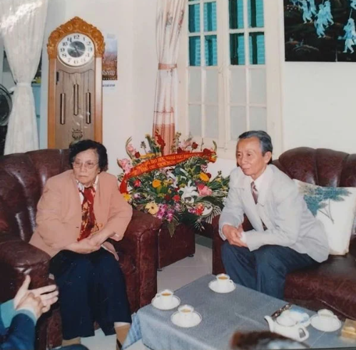

Trong không khí kỉ niệm 50 năm ngày đất nước thống nhất, trên khắp cả nước, muôn người dân đất Việt cùng hân hoan chào đón ngày lịch sử trọng đại này. Các chương trình thời sự liên tục chiếu lại những thước phim về những trận đánh lớn, về những người lính trẻ đã hoà máu thịt mình vào Đất Mẹ cho ngày độc lập hôm nay, rồi những nhân chứng lịch sử đã từng lăn lộn ngoài trận mạc kể về kí ức không thể nào quên, quyết không lùi bước trước bom đạn của kẻ thù. Tôi không sao quên được một cựu chiến binh chia sẻ: Có được hòa bình không phải dễ, phải có máu giữ lấy Hòa Bình. Lời nói mộc mạc của người cựu chiến binh ấy cứ ám ảnh tôi mãi, cho đến tận hôm nay, mỗi lần nhớ lại mà rơi nước mắt.
Rồi hình ảnh bà Nguyễn Thị Bình ký văn kiện Hiệp định Paris năm 1973 buộc Mĩ chấm dứt chiến tranh ở Việt Nam xuất hiện liên tục. Bà đã trở thành huyền thoại, là nhà ngoại giao tài ba khiến cộng đồng quốc tế nể phục. Nhìn người phụ nữ dịu dàng nhưng lại vô cùng mạnh mẽ quyết đoán ấy, tôi càng thêm kính trọng và biết ơn vô bờ.
Đó là vào đầu những năm 2000, Nhà xuất bản Kim Đồng bắt đầu xây dựng một số tủ sách lớn như: Tủ sách Danh nhân Việt Nam, Tủ sách Anh hùng liệt sĩ, Tủ sách Vàng, Thơ với thiếu nhi, Tủ sách Tranh truyện dân gian Việt Nam... Trong hơn 60 bộ sách mà Nhà xuất bản Kim Đồng xây dựng, Tủ sách danh nhân Việt Nam nổi lên như một ngọn sóng, nhằm tôn vinh những người đã hiến tài đã đóng góp cho đất nước trên nhiều lĩnh vực như văn hóa, chính trị, kinh tế, ngoại giao, xây dựng và bảo vệ tổ quốc... Chúng tôi cảm thấy thật thiếu sót nếu trong Tủ sách lại vắng bóng gương mặt người phụ nữ tài ba Nguyễn Thị Bình. Chính từ ý tưởng ấy mà ông Nguyễn Thắng Vụ, nguyên giám đốc Nhà xuất bản Kim Đồng đã liên hệ, đặt lịch được gặp bà.
Vậy là tôi được theo chân ông Nguyễn Thắng Vụ đến gặp bà Nguyễn Thị Bình mà bấy lâu chỉ có thể được biết qua sách báo. Ngôi nhà bà sinh sống cũng thật giản dị. Bà nói, nước ta chỉ có một nhà làm sách cho trẻ em, đấy là Nhà xuất bản Kim Đồng, công việc thật vinh quang nhưng trách nhiệm thì nặng nề lắm. Rồi bà hỏi riêng hai mẹ trẻ em ta thích đọc loại sách nào nhất, sách xuất bản hàng năm có đủ cho các em đọc không, rồi có cách gì để trẻ em miền núi cũng được tiếp cận sách như miền xuôi.
Khi nghe ông Nguyễn Thắng Vụ trả lời từng câu hỏi, bà mỉm cười hiền hậu rồi nói: "Tôi thấy Nhà xuất bản Kim Đồng làm tốt đấy, nội dung sách như một món quà lành mạnh góp phần hình thành nhân cách cho các cháu, trách nhiệm lớn lắm đó!".
Khi câu chuyện đã trở nên thân tình, Giám đốc Nguyễn Thắng Vụ mới trình bày rõ mong muốn của nhà xuất bản là có một cuốn sách viết về bà trong Tủ sách Danh nhân Việt Nam. Ông Nguyễn Thắng Vụ dứt lời, bà Bình trầm ngâm một lúc rồi nói: "Xin cảm ơn nhà ý của Nhà xuất bản Kim Đồng, nhưng tôi nghĩ đất nước mình còn nhiều người tài giỏi lắm, hãy viết về họ trước đi, còn tôi, tôi xin phép từ chối."
Ôi một con người huyền thoại, bản lĩnh kiên cường trước truyền thông quốc tế mà sao khi nói về bản thân lại khiêm nhường lạ vậy! Việc không thành nhưng tôi đã có một kỉ niệm đẹp và thật sự hạnh phúc khi được trực tiếp gặp người phụ nữ đã trở thành huyền thoại của Việt Nam trên mặt trận ngoại giao trong cuộc kháng chiến trường kì của dân tộc.
- Nguyên Tổng Biên tập Nhà xuất bản Kim Đồng -